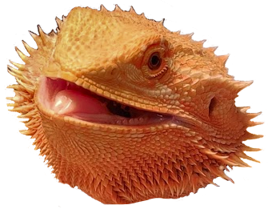

I've made some emoji for a discord server that I host for my friends. If you'd like to grab them too, feel free.
"Nice" |
"Tru" |
"YIKES" |
"Like button" |
"Subscribe button" |
And of course, one for my dearest Panini:

<-- back